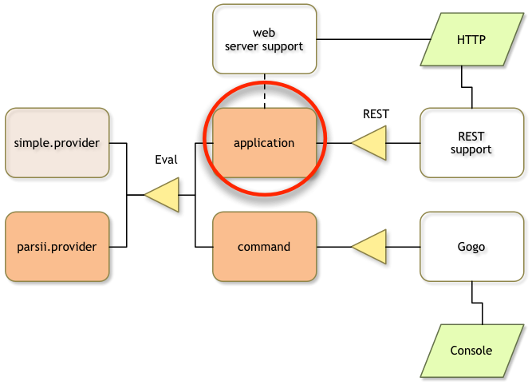
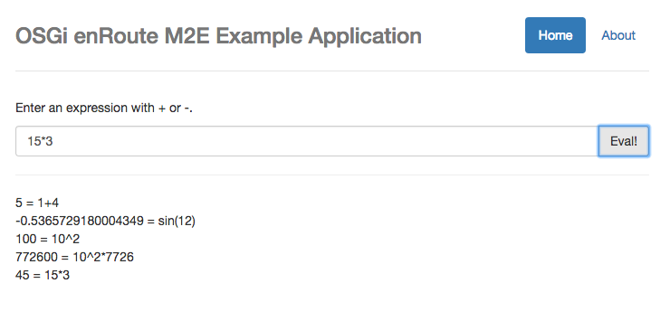
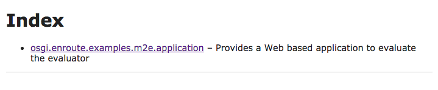

A Web Application
What You Will Learn in this Section
So far we’ve been able to test our expression evaluator with the Gogo command shell. In this section we create a small web application that calls the evaluator from the web.
We will create a small GUI in HTML 5 and Javascript based on Angular that uses the OSGi enRoute simple REST facility to call the evaluator service.
For many Java developers, Javascript, CSS, and HTML 5 are foreign and scary. However, this example requires very little knowledge of these resources. And won’t you admit that it’s cool to write something you can show your girl/boy friend without getting blank stares? If you’re absolutely not interested in web applications then you can skip this section.

Make sure you are in the top directory:
$ cd ~/workspaces/osgi.enroute.examples.eval
Project
osgi.enroute.examples.eval $ mkdir application
osgi.enroute.examples.eval $ cd application
application $ vi pom.xml
// edit pom
The pom for this project looks like:
<project
xmlns="http://maven.apache.org/POM/4.0.0"
xmlns:xsi="http://www.w3.org/2001/XMLSchema-instance"
xsi:schemaLocation="http://maven.apache.org/POM/4.0.0 http://maven.apache.org/xsd/maven-4.0.0.xsd"
>
<modelVersion>4.0.0</modelVersion>
<parent>
<groupId>org.osgi</groupId>
<artifactId>osgi.enroute.examples.eval</artifactId>
<version>1.0.0-SNAPSHOT</version>
</parent>
<artifactId>osgi.enroute.examples.eval.application</artifactId>
<description>A web application to evaluate expressions</description>
<dependencies>
<dependency>
<groupId>org.osgi</groupId>
<artifactId>osgi.enroute.examples.eval.api</artifactId>
<version>1.0.0-SNAPSHOT</version>
<scope>compile</scope>
</dependency>
</dependencies>
</project>
The Application Java Source Code
Our application class must provide access to the expression evaluator via REST. For this reason, there is a simple REST provider that leverages the OSGi model. The primary purpose of this support is to make it trivially easy to call Java code running in OSGi as a service from a Javascript application.
The secondary purpose of the application class is to act as a root for the requirements graph. It defines a number of requirements that cannot be analyzed from the code. We add those requirements using annotations. These annotations will then be converted to OSGi requirements by bnd.
application $ mkdir -p src/main/java/osgi/enroute/examples/eval/application
application $ vi src/main/java/osgi/enroute/examples/eval/application/EvalApplication.java
// Add the source code
The source code is:
package osgi.enroute.examples.eval.application;
import org.osgi.service.component.annotations.Component;
import org.osgi.service.component.annotations.Reference;
import osgi.enroute.configurer.api.RequireConfigurerExtender;
import osgi.enroute.examples.eval.api.Eval;
import osgi.enroute.google.angular.capabilities.RequireAngularWebResource;
import osgi.enroute.rest.api.REST;
import osgi.enroute.twitter.bootstrap.capabilities.RequireBootstrapWebResource;
import osgi.enroute.webserver.capabilities.RequireWebServerExtender;
@RequireAngularWebResource(resource={"angular.js","angular-resource.js", "angular-route.js"}, priority=1000)
@RequireBootstrapWebResource(resource="css/bootstrap.css")
@RequireWebServerExtender
@Component(name="osgi.enroute.examples.eval")
public class EvalApplication implements REST {
@Reference
Eval eval;
public double getEval(String string) throws Exception {
return eval.eval(string);
}
}
A short explanation of the annotations:
@RequireAngularWebResource– Instead of listing Javascript and CSS dependencies in theindex.htmlfile we can define what gets included with the annotation. This provides for a single definition of what resources should be included. This Angular annotation includes the angular Javascript resources.@RequireBootstrapWebResource– Includes the Bootstrap CSS@RequireWebServerExtender– The Webserver extender makes it easy to provide static context. It also provides the runtime support for the web resources.
The GUI
We want the application to look like:

About Angular
For many Java developers the web is a scary place. In OSGi enRoute we chose Angular for the GUI not expecting every Java OSGi developer to jump on that band wagon (this band wagon changes every 3 months anyway) but it allows very simple powerful and scalable applications.
The key concept of Angular is that it updates the GUI directly from the Javascript variables. This allows very clean separation between the business logic, the traditional model, and the GUI. The GUI itself is modeled with HTML 5 and also often contains logic. However, this view/control logic should be restricted to the control and view aspects and not contain business logic.
About HTML 5
Most Java developers still consider HTML to be a variant of XML. It is not, it is much more relaxed. In many cases it is not necessary to quote attribute values and many tags are not required to be closed. Though this sounds offensive to people used to XML it is actually more readable and sometimes not closing a tag prevents accidental whitespace between tags to kill a carefully crafted layout.
Static Web Content
The OSGi enRoute webserver bundle will map any directory named static in a bundle to the
web server’s root. In OSGi enRoute applications, the convention is to use the fully
qualified name of the application as the root. This content is generally not accessed
directly except for the index.html file in this directory. We therefore have the following
static web resource files:
static/
osgi.enroute.examples.eval/
index.html
favicon.ico
htm/
main/
about.htm
home.htm
index.html
The index.html file is the root of our Javascript application. It is an Angular
application. It uses URL based routing, this makes it slightly more complex than
the absolute simplest Angular application but it then makes turning it into something
useful much harder.
In the index.html file we are using macros and/or properties. We therefore need to
let bnd expand the file. This is needed because the web resources use the Bundle
Symbolic Name and the actual version used in the bundle, which might differ slightly from
the Maven version.
The index.html should be stored in src/main/resources/static/osgi.enroute.examples.eval/index.html, this
will make it available on the web server under /osgi.enroute.examples.eval/index.html.
application $ mkdir -p src/main/resources/static/osgi.enroute.examples.eval
application $ vi src/main/resources/static/osgi.enroute.examples.eval/index.html
// add the subsequent content
The first part of the index.html file is quite straightforward HTML 5 code made compatible with the Internet Explorer quirks.
<!DOCTYPE html>
<html lang="en">
<head>
<meta charset="utf-8">
<meta http-equiv="X-UA-Compatible" content="IE=edge">
<!-- HTML5 shim and Respond.js IE8 support of HTML5 elements and media queries -->
<!--[if lt IE 9]>
<script src="https://oss.maxcdn.com/html5shiv/3.7.2/html5shiv.min.js"></script>
<script src="https://oss.maxcdn.com/respond/1.4.2/respond.min.js"></script>
<![endif]-->
<meta name="viewport" content="width=device-width, initial-scale=1">
<meta name="description" content="">
<meta name="author" content="">
<link rel="icon" href=/osgi.enroute.examples.eval/favicon.ico">
<title>OSGi ENROUTE EXAMPLE APPLICATION</title>
The following link will include the CSS that the application needs. The CSS (in our
case Bootstrap) was indicated by the @RequireBootstrap annotation on the application
class. The /osgi.enroute.webresource/ URL is mapped to a servlet that will be able
to find all the required web resources for the given Bundle-SymbolicName and Bundle Version.
The ${bsn} macro and ${Bundle-Version} macro are expanded by bnd.
<link
rel ="stylesheet"
type="text/css"
href="/osgi.enroute.webresource/${bsn}/${Bundle-Version}/*.css"
>
</head>
Angular requires an ng-app attribute for the name of the application.
<body ng-app="osgi.enroute.examples.eval">
We use Bootstrap to create a container for the content.
<div class="container">
<div class="header">
The first part is a navigation bar where we have our 2 views listed. The Home view is our application, executing an expression evaluation. The second one is an About window. We use the URL routing mechanism to go to the right view.
<ul class="nav nav-pills pull-right">
<li
ng-class="{active: page() == '/'}">
<a href="#/">Home</a>
<li ng-class="{active: page() == '/about'}">
<a href="#/about">About</a>
</ul>
<h3
class="text-muted">
OSGi enRoute Example Application
</h3>
A simple alert area. This allows us to report errors like communication errors. We add a close button to remove the alerts one by one.
<div
ng-repeat ="alert in alerts"
class ="alert alert-{{alert.type || 'alert'}} alert-dismissible">
<button
type="button"
ng-click='closeAlert($index)'
class="close pull-right">
<span aria-hidden="true">×</span><span class="sr-only">Close</span>
</button>
</div>
</div>
This is the Angular magic. This element will be replaced by the content (htm/main/home.htm or htm/main/about.htm)
depending on the URL.
<div ng-view>
</div>
A simple footer. If you set the Bundle-Vendor header in the bnd.bnd file then it will be used here. Otherwise
it will use the generic Company title. Also note how we can use the build time stamp. You can use
any bnd Macro.
<div class="footer">
<p>© ${def;Bundle-Vendor;Company} ${tstamp;YYYY}</p>
</div>
</div>
This is where the magic happens for Javascript web resources. We include any resource that ends
with .js that has been required by the bundle. At the end, also the content of the web directory
in the bundle is appended.
<script src="/osgi.enroute.webresource/${bsn}/${Bundle-Version}/*.js"></script>
</body>
</html>
To replace the bnd macros with their value we must tell bnd to pre-process the resource. We therefore need to create a bnd.bnd file:
application $ vi bnd.bnd
// Add content
This requires the following line in the bnd.bnd file:
-includeresource: \
{static/osgi.enroute.examples.eval/index.html=src/main/resources/static/osgi.enroute.examples.eval/index.html}
The Views
The app has two views. They are stored in src/main/resources/static/osgi.enroute.examples.eval/main/htm.
application $ mkdir -p src/main/resources/static/osgi.enroute.examples.eval/main/htm
Home
The home.htm is the main view.
application $ vi src/main/resources/static/osgi.enroute.examples.eval/htm/main/home.htm
// add the content
It looks like:
<section
ng-cloak
style="min-height:500px">
<p>Enter an arithmetic expression like <code>sin(pi)</code>
<div
class="input-group">
The input field for the expression.
<input
type="text"
ng-model=expression
class="form-control">
<span class="input-group-btn">
<button class="btn btn-default" type="button" ng-click=eval(expression)>
Eval!
</button>
</span>
</div>
<hr>
<div style="min-height:500px">
Prints all the answers
<div ng-repeat="i in answers track by $index">
{{i}}
</div>
</div>
</section>
About
A simple about box.
application $ vi src/main/resources/static/osgi.enroute.examples.eval/htm/main/about.htm
// add the content
<section>
<h1>About</h1>
<p>This is a demo application to demonstrate how to build OSGi enRoute Applications with
Maven/M2E
<p>
</section>
The Javascript Code
The Javascript code must be placed in a directory in the src/resources/main/web. Any
content in this directory is treated as a web resource and automatically included
in the index.html page. The name of the files is irrelevant but the extension is
since the selection in the index.html file takes place on extension.
application $ mkdir -p src/main/resources/web
main.js
application $ vi src/main/resources/web/main.js
// add the content
We create a Javascript ‘module’. This is an anonymous function.
'use strict';
(function() {
We now create an Angular module. The name of the module must match the ng-app
attribute in the index.html file.
var MODULE =
angular.module('osgi.enroute.examples.eval', [ 'ngRoute' ] );
The next section configures the routing table. The routing table matches a pattern
in the URL and then selects the content of the ng-view element in the index.html
page.
MODULE.config( function($routeProvider) {
$routeProvider.when('/', { controller: mainProvider, templateUrl: '/osgi.enroute.examples.eval/htm/main/home.htm'});
$routeProvider.when('/about', { templateUrl: '/osgi.enroute.examples.eval/htm/main/about.htm'});
$routeProvider.otherwise('/');
});
Initialize when the module is ready to run. We add the data structure to hold the alerts and provide access to the current page name for the nav bar.
MODULE.run( function($rootScope, $location) {
$rootScope.alerts = [];
$rootScope.closeAlert = function(index) {
$rootScope.alerts.splice(index, 1);
};
$rootScope.page = function() {
return $location.path();
}
});
A list of answers, i.e. the history.
var answers = [ ];
This controller is called when the URL ends in #home. We set the history and add
an eval method. This method will call the server. If we receive an answer, we
add it to the history. Angular will then make sure it gets printed.
var mainProvider = function($scope, $http) {
$scope.answers=answers;
$scope.eval = function(expr) {
$http.get('/rest/eval/'+expr).then(
function(d) {
answers.push(d.data + " = " + expr);
}, function(d) {
$scope.alerts.push( { type: 'danger', msg: 'Failed with ['+ d.status + '] '+ d.statusText });
}
);
}
}
})();
Building
You should add the application module to the parent pom and then build the bundle:
application $ vi ../pom.xml
// add application module
application $ mvn install
...
Running
To run this application we need to add this bundle to the bndrun file. This requires the following steps in the bndrun project.
application $ cd ../bndrun
bndrun $ vi pom.xml
// edit the dependencies section
The dependencies section should look like:
<dependencies>
<dependency>
<groupId>org.osgi</groupId>
<artifactId>osgi.enroute.examples.eval.parsii.provider</artifactId>
<version>1.0.0-SNAPSHOT</version>
</dependency>
<dependency>
<groupId>org.osgi</groupId>
<artifactId>osgi.enroute.examples.eval.command</artifactId>
<version>1.0.0-SNAPSHOT</version>
</dependency>
<dependency>
<groupId>org.osgi</groupId>
<artifactId>osgi.enroute.examples.eval.application</artifactId>
<version>1.0.0-SNAPSHOT</version>
</dependency>
<dependency>
<groupId>org.osgi</groupId>
<artifactId>osgi.enroute.pom.distro</artifactId>
<version>2.0.0</version>
</dependency>
<dependency>
<groupId>org.apache.felix</groupId>
<artifactId>org.apache.felix.gogo.shell</artifactId>
<version>1.0.0</version>
</dependency>
</dependencies>
Then add the new -runrequires for the application:
bndrun $ vi osgi.enroute.examples.eval.bndrun
// Update -runrequires
-runrequires: \
osgi.identity;filter:='(osgi.identity=osgi.enroute.examples.eval.parsii.provider)',\
osgi.identity;filter:='(osgi.identity=org.apache.felix.gogo.shell)',\
osgi.identity;filter:='(osgi.identity=org.apache.felix.gogo.command)',\
osgi.identity;filter:='(osgi.identity=osgi.enroute.examples.eval.command)',\
osgi.identity;filter:='(osgi.identity=osgi.enroute.examples.eval.application)'
Then run mvn install to get the new list of -runbundles. This will give us a much larger
list because we now get all the web support:
bndrun $ mvn install
...
-runbundles: \
org.apache.felix.configadmin;version='[1.8.8,1.8.9)',\
org.apache.felix.gogo.command;version='[0.16.0,0.16.1)',\
org.apache.felix.gogo.runtime;version='[0.16.2,0.16.3)',\
org.apache.felix.log;version='[1.0.1,1.0.2)',\
org.apache.felix.scr;version='[2.0.2,2.0.3)',\
org.eclipse.equinox.metatype;version='[1.4.100,1.4.101)',\
org.osgi.service.metatype;version='[1.3.0,1.3.1)',\
osgi.enroute.examples.eval.command;version='[1.0.0,1.0.1)',\
osgi.enroute.examples.eval.parsii.provider;version='[1.0.0,1.0.1)',\
org.apache.felix.gogo.shell;version='[2.0.0,2.0.1)',\
org.apache.felix.http.jetty;version='[3.2.0,3.2.1)',\
org.apache.felix.http.servlet-api;version='[1.1.2,1.1.3)',\
org.eclipse.equinox.coordinator;version='[1.3.100,1.3.101)',\
org.eclipse.equinox.event;version='[1.3.100,1.3.101)',\
org.osgi.service.event;version='[1.3.1,1.3.2)',\
osgi.enroute.configurer.simple.provider;version='[2.0.0,2.0.1)',\
osgi.enroute.dtos.bndlib.provider;version='[2.0.0,2.0.1)',\
osgi.enroute.examples.eval.application;version='[1.0.0,1.0.1)',\
osgi.enroute.executor.simple.provider;version='[1.0.0,1.0.1)',\
osgi.enroute.google.angular.webresource;version='[1.5.7,1.5.8)',\
osgi.enroute.logger.simple.provider;version='[2.0.0,2.0.1)',\
osgi.enroute.rest.simple.provider;version='[2.0.0,2.0.1)',\
osgi.enroute.twitter.bootstrap.webresource;version='[3.3.5,3.3.6)',\
osgi.enroute.web.simple.provider;version='[2.0.0,2.0.1)'
...
Add the new -runbundles to the bndrun file and run mvn install again.
bndrun $ vi osgi.enroute.examples.eval.bndrun
// Update the -runbundles
bndrun $ mvn install
...
bndrun $ java -jar osgi.enroute.examples.eval.jar
2016-10-04 11:44:50.960:INFO::main: Logging initialized @673ms
2016-10-04 11:44:50.989:WARN:oejs.session:main: Sessions created by this manager are immortal (default maxInactiveInterval={})0
2016-10-04 11:44:50.992:INFO:oejs.Server:main: jetty-9.3.8.v20160314
2016-10-04 11:44:51.029:INFO:oejsh.ContextHandler:main: Started o.e.j.s.ServletContextHandler@1757cd72{/,null,AVAILABLE}
2016-10-04 11:44:51.030:INFO:oejs.Server:main: Started @742ms
2016-10-04 11:44:51.049:INFO:oejs.ServerConnector:main: Started ServerConnector@68c72235{HTTP/1.1,[http/1.1]}{0.0.0.0:8080}
____ _
___ _ __ | _ \ ___ _ _| |_ ___
/ _ \ '_ \| |_) / _ \| | | | __/ _ \
| __/ | | | _ < (_) | |_| | |_ __/
\___|_| |_|_| \_\___/ \__,_|\__\___|
http://enroute.osgi.org/
G!
The output from Gogo and the log can be garbled.
We can now open a browser on http://localhost:8080/osgi.enroute.examples.eval
What we get is the home page of our application, with a text entry field to try out the expression evaluator!
Index
If you go to the root of the webserver you get an empty page. It is possible to get the active web application(s) listed here. For this, we need to add some metadata to the application project.
bndrun $ cd ../application
application $ vi bnd.bnd
// Add the following content
Bundle-Description: \
Provides a Web based application to evaluate the evaluator
EnRoute-Application: osgi.enroute.examples.eval
-includeresource: \
{static/osgi.enroute.examples.eval/index.html=\
src/main/resources/static/osgi.enroute.examples.eval/index.html}
If we now build and then run again then we should see the application listed on the home page.
application $ mvn install
...
application $ cd ../bndrun
bndrun $ mvn install
bndrun $ java -jar osgi.enroute.examples.eval.jar
...
This list is created by the web server if nothing else is registered at the root. This list looks like:

Click on the link and you should get the application in the browser.
We can now open a browser on http://localhost:8080 to try this out.